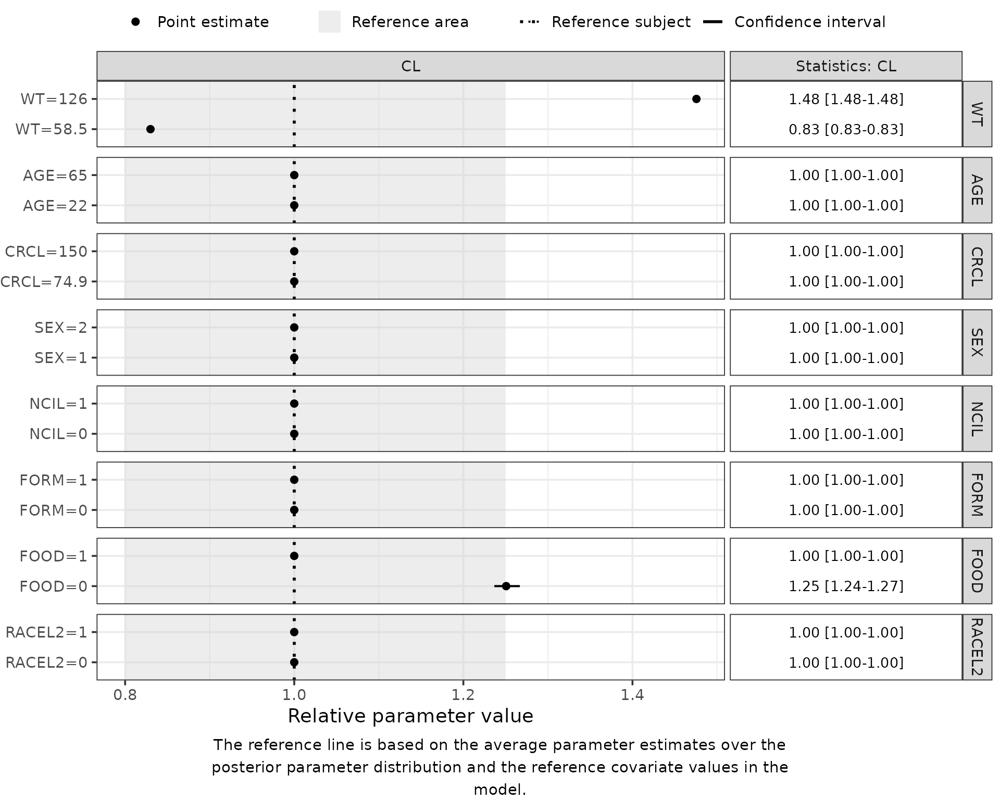

1. Quick-Start: Forest Plots for NONMEM Models
Part1-quick-start.Rmd
suppressPackageStartupMessages({
library(PMXForest)
library(dplyr)
library(ggplot2)
})
theme_set(theme_bw(base_size = 14))
theme_update(plot.title = element_text(hjust = 0.5))
set.seed(865765)Introduction
This vignette is the shortest path from a fitted NONMEM model to a Forest plot. It uses a PK model estimated with PsN and produces a parametric Forest plot of the covariate effects on clearance, with the uncertainty taken from the NONMEM covariance step.
A parametric Forest plot is built in five steps:
- Describe the covariate values to display (
setupDfCovs()). - Write the function that turns parameter estimates and covariate values into the quantities to plot.
- Draw parameter vectors that carry the estimation uncertainty (
getSamples()). - Compute the plot data (
getForestDFSCM()). - Draw the plot (
forestPlot()).
The Walkthrough covers the same steps in full, including empirical Forest plots, alternative uncertainty sources, an explicit reference subject, and the formatting arguments of forestPlot().
Which vignette do I want?
| If you want to… | Read |
|---|---|
| get a plot out of a NONMEM model quickly | this vignette |
| build a publication Forest plot end to end | 2. Walkthrough |
| control how covariate values, references or rows are chosen | 3. Preparing Forest plot inputs |
| plot AUC, half-life or another derived quantity | 3. Secondary parameters |
plot a model that is not a NONMEM $PK block |
3. R-coded models |
| plot hazard ratios or event probabilities | 3. Time-to-event models |
1. Describe the covariates
setupDfCovs() reads a data set, summarises each covariate, and returns a data frame in which every row is one row of the Forest plot. Continuous covariates are represented by their 5th and 95th percentiles; binary covariates are expanded to one row per level.
dataFile <- system.file("extdata", "SimVal/DAT-1-MI-PMX-2.csv", package = "PMXForest")
modFile <- system.file("extdata", "SimVal/run7.mod", package = "PMXForest")
dfData <- read.csv(dataFile)
covariates <- c("WT", "AGE", "CRCL", "SEX", "NCIL", "FORM", "FOOD", "RACEL2")
dfCovs <- setupDfCovs(data = dfData, covariates = covariates, idVar = "ID")
dfCovs
#> WT AGE CRCL SEX NCIL FORM FOOD RACEL2 COVARIATEGROUPS
#> 1 58.5 -99 -99.0 -99 -99 -99 -99 -99 WT
#> 2 126.0 -99 -99.0 -99 -99 -99 -99 -99 WT
#> 3 -99.0 22 -99.0 -99 -99 -99 -99 -99 AGE
#> 4 -99.0 65 -99.0 -99 -99 -99 -99 -99 AGE
#> 5 -99.0 -99 74.9 -99 -99 -99 -99 -99 CRCL
#> 6 -99.0 -99 150.0 -99 -99 -99 -99 -99 CRCL
#> 7 -99.0 -99 -99.0 1 -99 -99 -99 -99 SEX
#> 8 -99.0 -99 -99.0 2 -99 -99 -99 -99 SEX
#> 9 -99.0 -99 -99.0 -99 0 -99 -99 -99 NCIL
#> 10 -99.0 -99 -99.0 -99 1 -99 -99 -99 NCIL
#> 11 -99.0 -99 -99.0 -99 -99 0 -99 -99 FORM
#> 12 -99.0 -99 -99.0 -99 -99 1 -99 -99 FORM
#> 13 -99.0 -99 -99.0 -99 -99 -99 0 -99 FOOD
#> 14 -99.0 -99 -99.0 -99 -99 -99 1 -99 FOOD
#> 15 -99.0 -99 -99.0 -99 -99 -99 -99 0 RACEL2
#> 16 -99.0 -99 -99.0 -99 -99 -99 -99 1 RACEL2Cells that are inactive on a row hold the missing-value indicator -99; the parameter function in the next step treats that as “no effect”. Multi-level categorical covariates (one-hot encoding, reference level) are covered in the Walkthrough.
2. Generate the parameter function
The parameter function turns the estimates and one row of covariate values into the quantities to plot. Rather than retyping the model’s algebra in R, createParamFunction() translates the $PK block of the control stream.
gen <- createParamFunction(
modFile,
parameters = c("CL", "FREL", "V"),
covRef = list(GENO1 = 0, GENO3 = 0),
secondary = list(AUC = "80 / (CL / FREL)"),
quiet = TRUE
)covRef pins down two genotype dummies the control stream does not settle on its own – without it the generator proposes a value and warns. secondary adds AUC after an 80 mg dose, which is not in $PK because the dose is not.
The result is source text, not a function. Read it against your control stream before you run it: the missing-value handling is hoisted into an annotated preamble, and everything below is a plain transliteration of $PK.
cat(gen$code, sep = "\n")
#> ## Generated by PMXForest::createParamFunction() from run7.mod.
#> ## Typical values: every ETA() in $PK has been set to 0.
#> ## Review this against the control stream before use.
#>
#> paramFunction <- function(thetas, df, ...) {
#>
#> ## ---- Covariate references, taken from run7.mod --------------------------------------
#> ## SEX reference level of the "; Most common" branch [run7.mod:18]
#> SEX <- if (!is.null(df[["SEX"]]) && df[["SEX"]] != -99) df[["SEX"]] else 1
#> ## GENO4 reference level of the "; Most common" branch [run7.mod:24]
#> GENO4 <- if (!is.null(df[["GENO4"]]) && df[["GENO4"]] != -99) df[["GENO4"]] else 0
#> ## FORM reference level of the "; Most common" branch [run7.mod:30]
#> FORM <- if (!is.null(df[["FORM"]]) && df[["FORM"]] != -99) df[["FORM"]] else 1
#> ## FOOD reference level of the "; Most common" branch [run7.mod:40]
#> FOOD <- if (!is.null(df[["FOOD"]]) && df[["FOOD"]] != -99) df[["FOOD"]] else 1
#> ## WT normalisation constant in (WT / 75) [run7.mod:53]
#> WT <- if (!is.null(df[["WT"]]) && df[["WT"]] != -99) df[["WT"]] else 75
#> ## GENO1 supplied through covRef
#> GENO1 <- if (!is.null(df[["GENO1"]]) && df[["GENO1"]] != -99) df[["GENO1"]] else 0
#> ## GENO3 supplied through covRef
#> GENO3 <- if (!is.null(df[["GENO3"]]) && df[["GENO3"]] != -99) df[["GENO3"]] else 0
#>
#> ## ---- $PK, transliterated ---------------------------------------------------
#> if (SEX == 1) FRELSEX <- 1
#> if (SEX == 2) FRELSEX <- 1 + thetas[14]
#> if (GENO4 == 0) FRELGENO4 <- 1
#> if (GENO4 == 1) FRELGENO4 <- 1 + thetas[13]
#> if (FORM == 1) FRELFORM <- 1
#> if (FORM == 0) FRELFORM <- 1 + thetas[12]
#> FRELCOV <- FRELFORM * FRELGENO4 * FRELSEX
#> if (FOOD == 1) CLFOOD <- 1
#> if (FOOD == 0) CLFOOD <- 1 + thetas[11]
#> CLCOV <- CLFOOD
#> TVFREL <- thetas[1]
#> TVFREL <- FRELCOV * TVFREL
#> CLWT <- (WT / 75)^thetas[2]
#> CLGENO1 <- 1
#> CLGENO2 <- 1
#> CLGENO3 <- 1
#> CLGENO4 <- 1
#> if (GENO1 == 1) CLGENO1 <- 1 + thetas[8]
#> if (GENO3 == 1) CLGENO3 <- 1 + thetas[9]
#> if (GENO4 == 1) CLGENO4 <- 1 + thetas[10]
#> CLCOV1 <- CLWT * CLGENO1 * CLGENO2 * CLGENO3 * CLGENO4
#> VWT <- (WT / 75)^thetas[3]
#> VCOV1 <- VWT
#> TVCL <- thetas[4] * CLCOV1
#> TVCL <- CLCOV * TVCL
#> TVV <- thetas[5] * VCOV1
#> FREL <- TVFREL # ETA() -> 0 (typical value)
#> CL <- TVCL # ETA() -> 0 (typical value)
#> V <- TVV # ETA() -> 0 (typical value)
#>
#> ## ---- Secondary parameters -------------------------------------------------
#> ## AUC (inline snippet)
#> AUC <- local({ 80 / (CL / FREL) })
#>
#> list(
#> CL = CL,
#> FREL = FREL,
#> V = V,
#> AUC = AUC
#> )
#> }
#>
#> ## functionListName <- c("CL", "FREL", "V", "AUC")
#> ## noBaseThetas <- 14Once it matches the model, evaluate it:
gen also carries the parameter names and the THETA count, so neither has to be typed in and kept up to date by hand.
If the translation is not right for what you need, the source text is the starting point rather than a dead end — Preparing Forest plot inputs, Section 2.4 shows how to adjust it without losing the parts that were right.
If the model was run with a $TABLE holding the parameters and the covariates, verifyParamFunction() checks the translation against the values NONMEM itself wrote. No $TABLE is bundled here, so it is not shown; see the Walkthrough and Preparing Forest plot inputs.
3. Sample the parameter uncertainty
getSamples() reads the .ext file for the final estimates and the .cov file for the covariance matrix, then draws n parameter vectors from the implied multivariate normal distribution.
extFile <- system.file("extdata", "SimVal/run7.ext", package = "PMXForest")
covFile <- system.file("extdata", "SimVal/run7.cov", package = "PMXForest")
dfSamples <- getSamples(covFile, extFile = extFile, n = 200)4. Compute the Forest plot data
getForestDFSCM() evaluates paramFunction for every row of dfCovs and every parameter vector in dfSamples, then summarises the results into the columns forestPlot() needs. noBaseThetas is the number of THETAs in the model.
With cdfCovsNames left at its default, each row is labelled from its own covariate values (WT=58.5, SEX=2, and so on). The Walkthrough shows how to supply publication-quality row labels and covariate group names.
dfres <- getForestDFSCM(
dfCovs = dfCovs,
functionList = list(paramFunction),
functionListName = gen$functionListName,
noBaseThetas = gen$noBaseThetas,
dfParameters = dfSamples
)5. Draw the plot
forestPlot(dfres, parameters = "CL")
The dotted line marks the reference. No dfRefRow was supplied, so the reference is the row with every covariate set to -99. With a generated parameter function that is the right reference by construction: -99 sends each covariate to the value the preamble read out of $PK, so the reference is the model’s own reference subject rather than something computed separately that might disagree with it. Supplying a reference taken from the data instead — a median weight, the most common formulation — is a deliberate choice, and one the Walkthrough makes explicitly.
The points show the covariate effect on CL relative to that reference, and the bars its 90% confidence interval. WT is fixed in this model, so its interval has zero width.
Next steps. The Walkthrough adds an explicit reference subject, empirical Forest plots, bootstrap and SIR uncertainty, and the formatting arguments of forestPlot(). The deep-dive vignettes cover preparing Forest plot inputs, R-coded models, and time-to-event models.